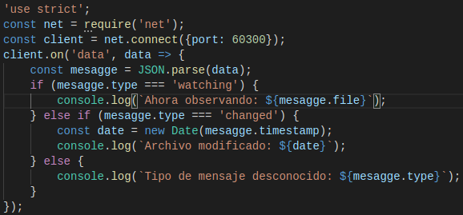
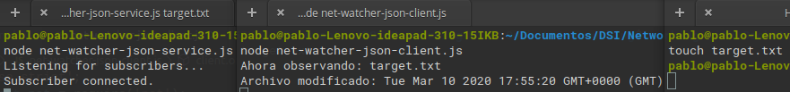

Creating Socket Client Connections
A continuación definimos un programa cliente en Node.js para recibir mensajes JSON en nuestro programa net-watcher-json-service. Veamos la implementación:

- net.connect se usa para crear una conexión cliente local al puerto 60300.
- El objeto cliente es un Socket, igual que es el caso del servidor.
- Cada vez que ocurre un evento de datos, la función callback toma el objeto buffer entrante, analiza el mensaje JSON y luego registra en la consola el mensaje apropiado.
- El programa escucha unicamente eventos de datos.
Vemos su ejecución:
